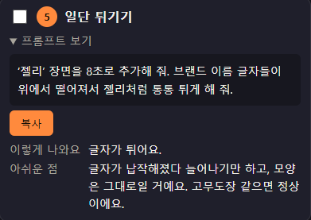
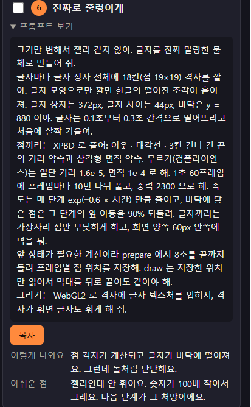
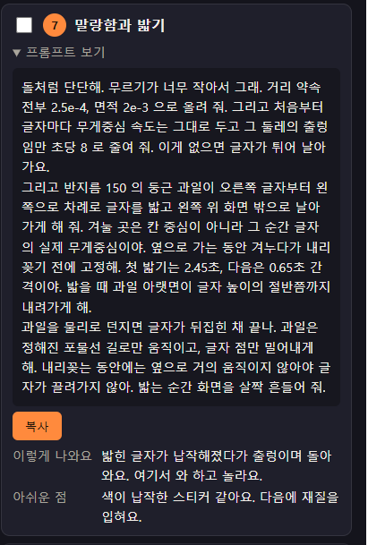
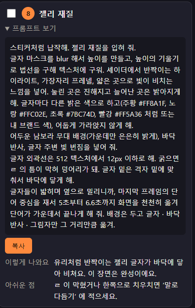
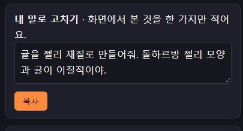

모션 작업실 - 젤리 프롬프트
05) 일단 튀기기


프롬프트
모션_작업실.html 맨 위의 약속을 따라 같은 폴더의 animation.js 를 만들거나 고쳐 줘. 브랜드 이름은 돌하르방, 한 글자는 돌, 슬로건은 돌하르방에 대하여 배워보아요. 이야.
‘젤리’ 장면을 8초로 추가해 줘. 브랜드 이름 글자들이 위에서 떨어져서 젤리처럼 통통 튀게 해 줘.예상 결과
이렇게 나와요
글자가 튀어요.
아쉬운 점
글자가 납작해졌다 늘어나기만 하고, 모양은 그대로일 거예요. 고무도장 같으면 정상이에요.영상 결과
06) 진짜로 출렁이게


프롬프트
모션_작업실.html 맨 위의 약속을 따라 같은 폴더의 animation.js 를 만들거나 고쳐 줘. 브랜드 이름은 돌하르방, 한 글자는 돌, 슬로건은 돌하르방에 대하여 배워보아요. 이야.
크기만 변해서 젤리 같지 않아. 글자를 진짜 말랑한 물체로 만들어 줘.
글자마다 글자 상자 전체에 18칸(점 19×19) 격자를 깔아. 글자 모양으로만 깔면 한글의 떨어진 조각이 흩어져. 글자 상자는 372px, 글자 사이는 44px, 바닥은 y = 880 이야. 글자는 0.1초부터 0.3초 간격으로 떨어뜨리고 처음에 살짝 기울여.
점끼리는 XPBD 로 풀어: 이웃 · 대각선 · 3칸 건너 긴 끈의 거리 약속과 삼각형 면적 약속. 무르기(컴플라이언스)는 일단 거리 1.6e-5, 면적 1e-4 로 해. 1초 60프레임에 프레임마다 10번 나눠 풀고, 중력 2300 으로 해. 속도는 매 단계 exp(−0.6 × 시간) 만큼 줄이고, 바닥에 닿은 점은 그 단계의 옆 이동을 90% 되돌려. 글자끼리는 가장자리 점만 부딪히게 하고, 화면 양쪽 60px 안쪽에 벽을 둬.
앞 상태가 필요한 계산이라 prepare 에서 8초를 끝까지 돌려 프레임별 점 위치를 저장해. draw 는 저장한 위치만 읽어서 막대를 뒤로 끌어도 같아야 해.
그리기는 WebGL2 로 격자에 글자 텍스처를 입혀서, 격자가 휘면 글자도 휘게 해 줘.예상 결과
이렇게 나와요
점 격자가 계산되고 글자가 바닥에 떨어져요. 그런데 돌처럼 단단해요.
아쉬운 점
젤리인데 안 휘어요. 숫자가 100배 작아서 그래요. 다음 단계가 그 처방이에요.영상 결과
07) 말랑함과 밝기


프롬프트
모션_작업실.html 맨 위의 약속을 따라 같은 폴더의 animation.js 를 만들거나 고쳐 줘. 브랜드 이름은 돌하르방, 한 글자는 돌, 슬로건은 돌하르방에 대하여 배워보아요. 이야.
돌처럼 단단해. 무르기가 너무 작아서 그래. 거리 약속 전부 2.5e-4, 면적 2e-3 으로 올려 줘. 그리고 처음부터 글자마다 무게중심 속도는 그대로 두고 그 둘레의 출렁임만 초당 8 로 줄여 줘. 이게 없으면 글자가 튀어 날아가요.
그리고 반지름 150 의 둥근 과일이 오른쪽 글자부터 왼쪽으로 차례로 글자를 밟고 왼쪽 위 화면 밖으로 날아가게 해 줘. 겨눌 곳은 칸 중심이 아니라 그 순간 글자의 실제 무게중심이야. 옆으로 가는 동안 겨누다가 내리꽂기 전에 고정해. 첫 밟기는 2.45초, 다음은 0.65초 간격이야. 밟을 때 과일 아랫면이 글자 높이의 절반쯤까지 내려가게 해.
과일을 물리로 던지면 글자가 뒤집힌 채 끝나. 과일은 정해진 포물선 길로만 움직이고, 글자 점만 밀어내게 해. 내리꽂는 동안에는 옆으로 거의 움직이지 않아야 글자가 끌려가지 않아. 밟는 순간 화면을 살짝 흔들어 줘.예상 결과
이렇게 나와요
밟힌 글자가 납작해졌다가 출렁이며 돌아와요. 여기서 와 하고 놀라요.
아쉬운 점
색이 납작한 스티커 같아요. 다음에 재질을 입혀요.영상 결과
08) 젤리 재질


프롬프트
모션_작업실.html 맨 위의 약속을 따라 같은 폴더의 animation.js 를 만들거나 고쳐 줘. 브랜드 이름은 돌하르방, 한 글자는 돌, 슬로건은 돌하르방에 대하여 배워보아요. 이야.
스티커처럼 납작해. 젤리 재질을 입혀 줘.
글자 마스크를 blur 해서 높이를 만들고, 높이의 기울기로 법선을 구해 텍스처에 구워. 셰이더에서 반짝이는 하이라이트, 가장자리 프레넬, 얇은 곳으로 빛이 비치는 느낌을 넣어. 눌린 곳은 진해지고 늘어난 곳은 밝아지게 해. 글자마다 다른 밝은 색으로 하고(주황 #FF8A1F, 노랑 #FFC02E, 초록 #7BC74D, 빨강 #FF5A36 처럼 또는 내 브랜드 색), 어둡게 가라앉지 않게 해.
어두운 남보라 무대 배경(가운데만 은은히 밝게), 바닥 반사, 글자 주변 빛 번짐을 넣어 줘.
글자 외곽선은 512 텍스처에서 12px 이하로 해. 굵으면 ㄹ 의 틈이 막혀 덩어리가 돼. 글자 밑은 격자 밑에 맞춰서 바닥에 닿게 해.
글자들이 밟히며 옆으로 밀리니까, 마지막 프레임의 단어 중심을 재서 5초부터 6.6초까지 화면을 천천히 옮겨 단어가 가운데서 끝나게 해 줘. 배경은 두고 글자 · 바닥 반사 · 그림자만 그 거리만큼 옮겨.예상 결과
이렇게 나와요
유리처럼 반짝이는 젤리 글자가 바닥에 닿아 비쳐요. 이 장면은 완성이에요.
아쉬운 점
ㄹ 이 막혔거나 한쪽으로 치우치면 ‘말로 다듬기’ 에 적으세요.영상 결과
08-02) 귤 재질 수정


프롬프트
모션_작업실.html 맨 위의 약속을 따라 같은 폴더의 animation.js 를 만들거나 고쳐 줘. 브랜드 이름은 돌하르방, 한 글자는 돌, 슬로건은 돌하르방에 대하여 배워보아요. 이야.
귤을 젤리 재질로 만들어줘. 돌하르방 젤리 모양과 귤이 이질적이야.
왜 그런지 먼저 쉬운 말로 말해 주고 고쳐 줘. 화면에서 무엇이 달라지는지도 알려 줘.예상 결과
기존에 귤 재질이 젤리로 바뀐다.